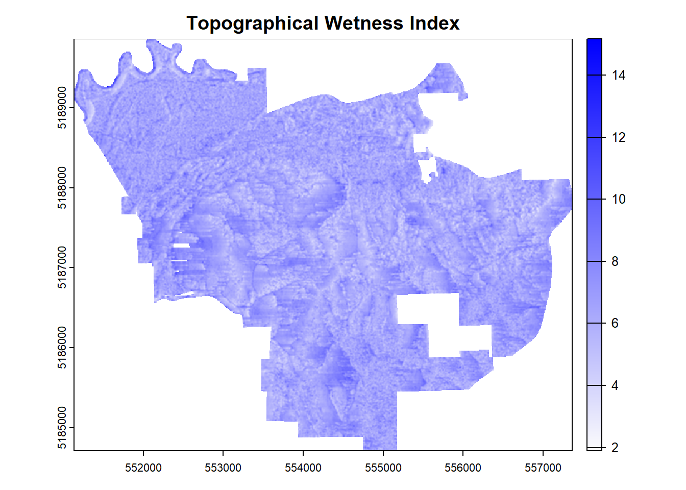

Now, we will go into the function that calculates the metrics internally, surface_met. This option is less complicated to get to work, but also comes with drawbacks. It will not only take longer to run, but also has slightly less accurate results.
This function can calculate any and all five of the types of metrics described above. The default is to calculate all five, but that can be changed with a different input of elev_dev .
Parameters
Inputs
Description
DEM
As the name suggests, this input is the DEM/DTM
len
Number input represents the length at which the metric is calculated
elev_dev
Vector input of selection of metrics. The choices are “grad”, “prof”, “plan”, “dev”, “twi”
export
This is a binary (true/false) parameter that determines whether or not the function exports the output(s) to a file
Using the function
elev1 <-surface_met(dem, len =20,elev_dev =c("grad", "prof", "plan", "twi"))
A progress bar is printed below a few of the functions, in case you were wondering what those odd lines were. This is added so that the user can have some semblance of how much is left to run. Most of the functions within the entirety of the tool do something similar, as they will often take some time to run.
Visualizing output
As we can see, the shape is similar to the one calculated by the Executable Files, though the scale is a little different
For the types of curvature, the edges are puffed up, as shown below.
This is done to ensure that data is not eliminated, since the other option would make it so that plenty of area around the edges would be eliminated, exponentially so with larger length scales. These will get smoothed out later on in the WIP process, so the final output will not look like this.
One last visualization that you might find interesting is how the TWI looks, so this is shown below.

Preparing for next step
As with surface_met1, it is good practice to load up all the raster metrics in one place, since it will make things much easier later on.
If all of the needed metrics were generated just from surface_met, then we can just combine them with a vector, as seen below.
in_rasts <-c(elev1, elev2)
Doing this keeps them in a list format, with the key names still attached to each type of metric.
In addition, if you want to just keep one scale of metrics (like the grad, prof, plan, etc. of just 100m) in the later models, then there is no combination of elements needed! Just keep the returned object from the surface_met function